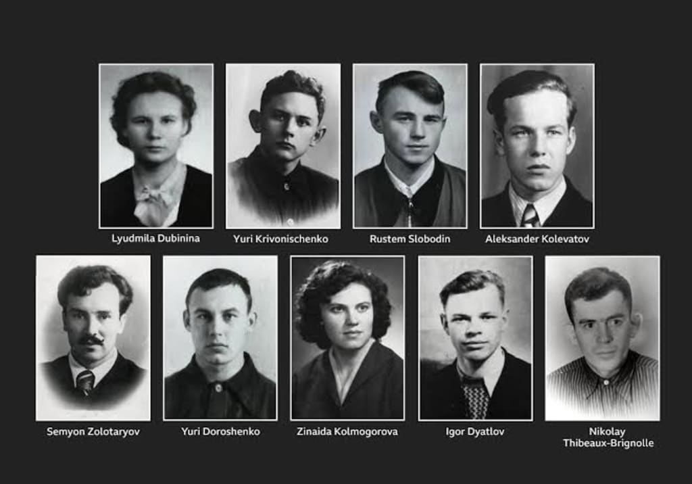
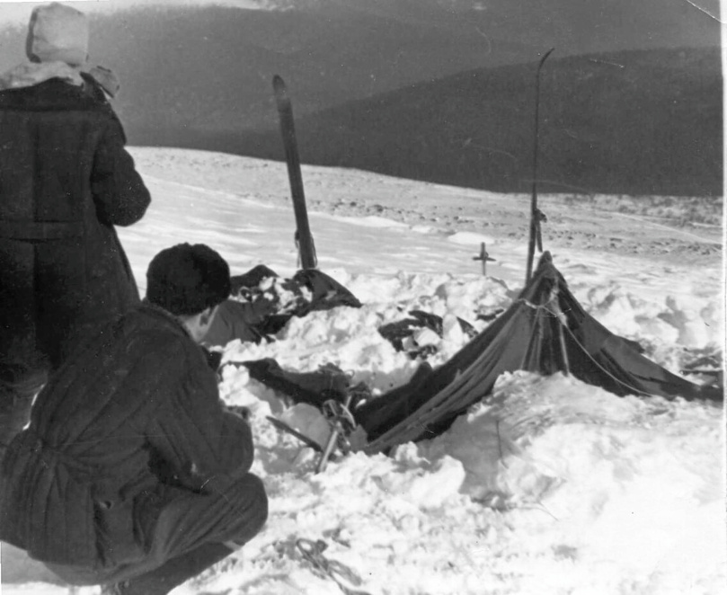
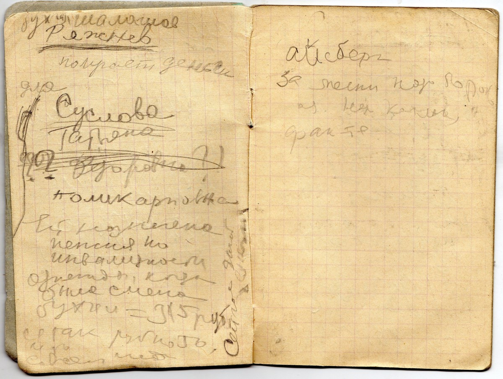

The Dyatlov Pass
Kholat Syakhl, Soviet Union — February 1959

The Event
Nine experienced hikers led by Igor Dyatlov disappeared in the Ural Mountains. Their tent was found slashed from the inside, their belongings left behind, and their bodies scattered across the sub-zero landscape—some barefoot, some with inexplicable internal injuries.
Evidence Locker


Current Theories
The Archive presents these possibilities not as truth, but as the limits of current forensic understanding.
- Infrasound-Induced Panic: Karman vortex sheets formed by the local topography may have generated infrasound frequencies, potentially inducing manic psychological states in the hikers.
- Slab Avalanche Event: The campsite cut into the slope may have weakened the snowpack. Heavy winds likely triggered a dense snow slab to collapse onto the tent, explaining the internal cuts as a desperate exit attempt.
- Military Weapons Testing: Occurring during the heights of the Cold War, the proximity to restricted zones suggests the hikers may have encountered ballistic or chemical tests, which could explain traces of radiation on clothing.